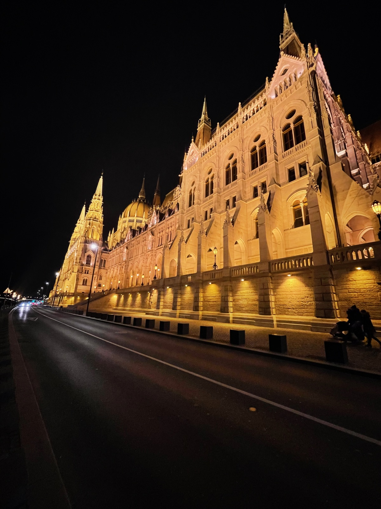
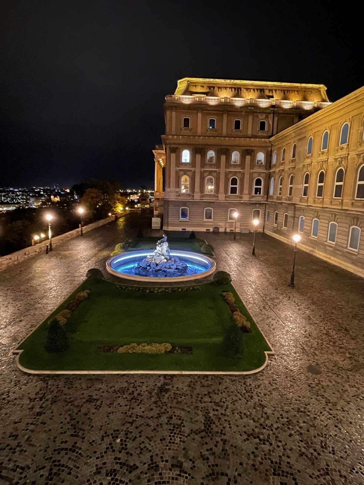
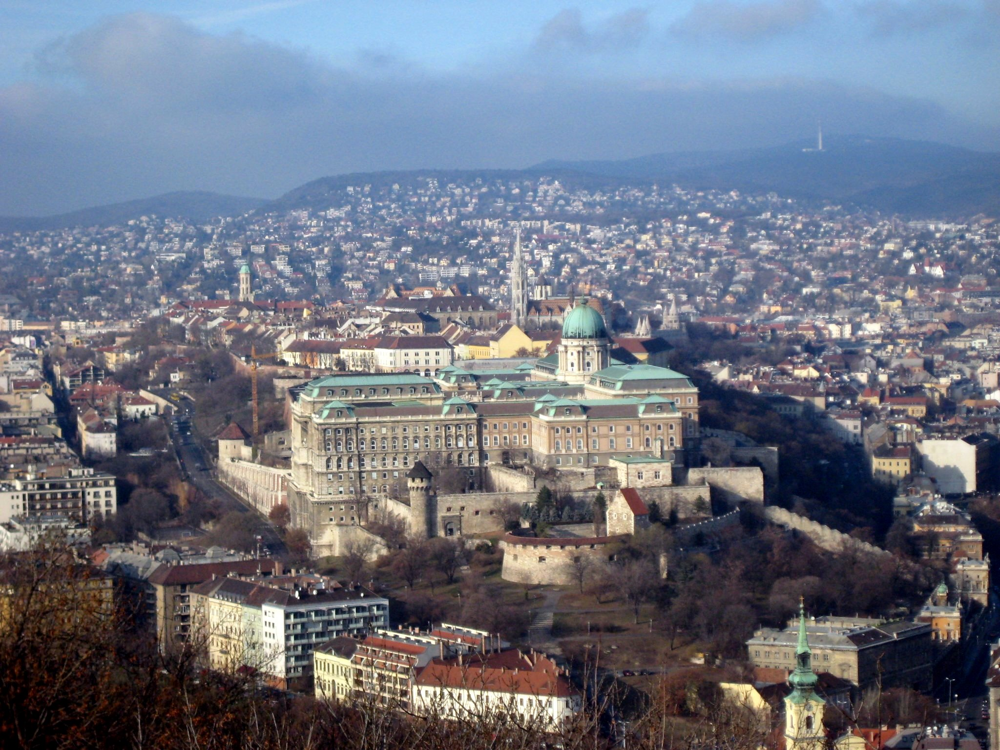
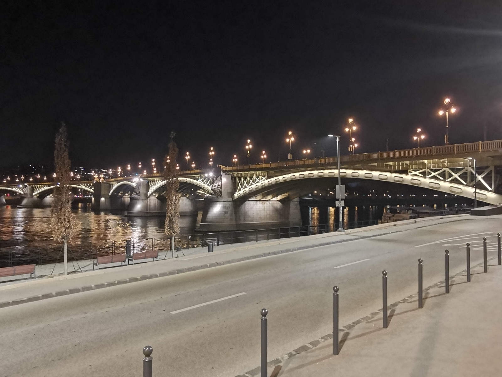
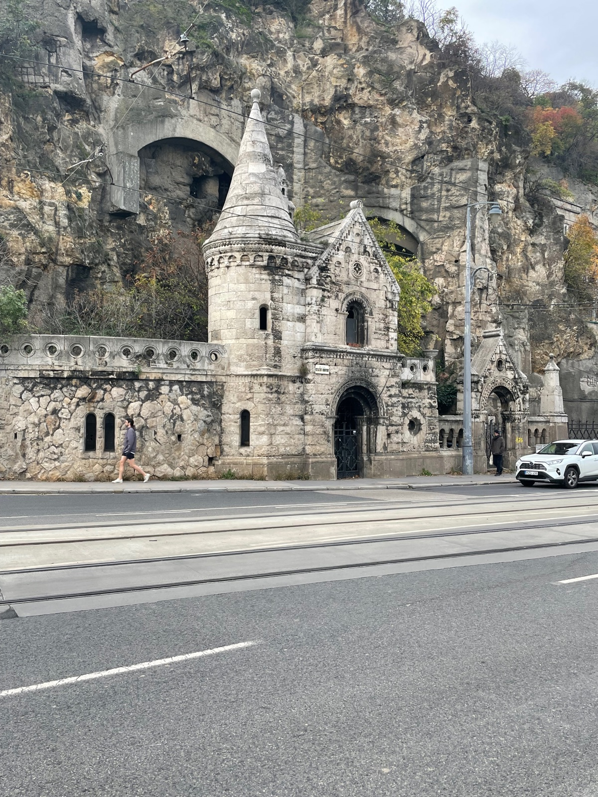
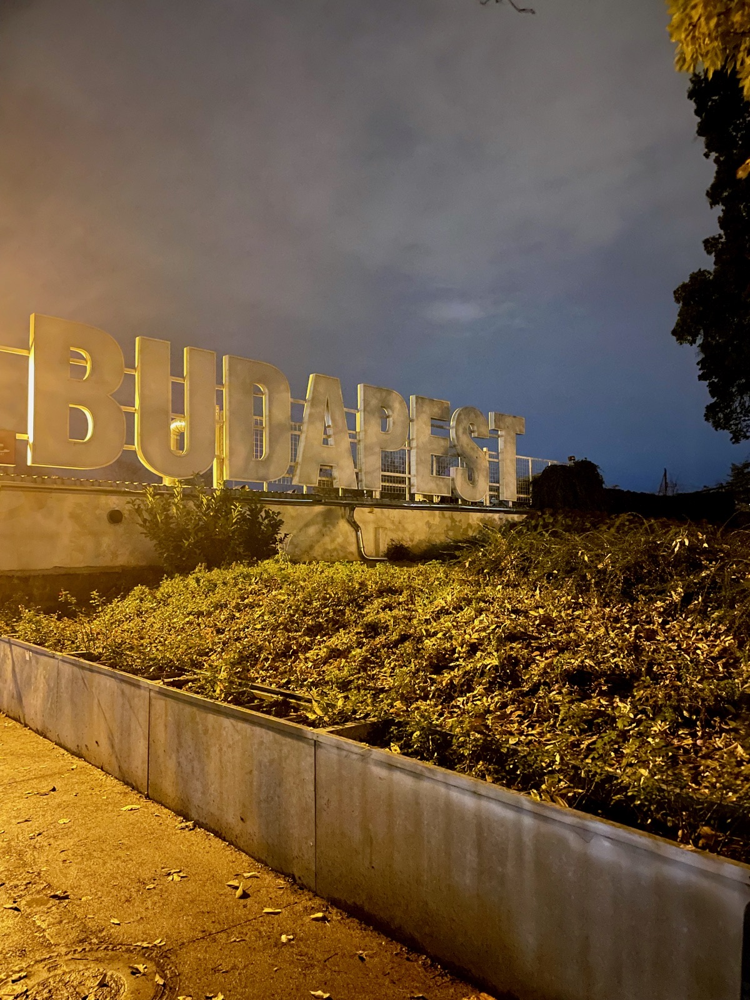

Boutique hotel in the heart of Pest, steps from Váci utca and the Danube. The staff went above and beyond — they hand-wrote a list of GF-friendly restaurants on hotel stationery for us.
Markets as dedicated GF but menu includes a "may contain" disclaimer. Some celiacs have reported reactions from externally sourced products. Use caution for strict celiac.
What to Order
Sandwiches on GF bread, waffles, avocado toast, Hungarian cinnamon rolls.
Fully dedicated GF kitchen. All 15+ allergens labeled on menu. Dedicated fryer. The most-reviewed dedicated GF restaurant in Budapest with 259 FMGF ratings.
Dedicated GF bakery free of gluten, soy, rice, and corn. Uses buckwheat, millet, bamboo fiber. Also lactose-free and dairy-free. Staff change gloves between orders.
What to Order
Breads, bagels, croissants, cinnamon rolls, cakes, sandwiches. Items sell out — go early. Frozen bread available for takeaway.
Mixed kitchen with strong GF protocols. Owner is celiac. Separate oven and tools, staff regularly trained. Uses Schär flour. The Vécsey utca location has a fully separate GF kitchen.
What to Order
GF lángos with your choice of toppings. GF beer also available.
4 lines covering both Buda and Pest. M1 along Andrássy Avenue is one of the oldest in continental Europe.
M2 & M4 cross the Danube
Trams
Tram 2 runs along the Pest-side Danube — one of Europe's most scenic tram rides. Views of Parliament and Buda Castle.
Trams 4 & 6 run 24 hours
Buses
Extensive network fills metro and tram gaps. Bus 16 reaches the Castle District from Deák tér.
Night buses (prefix 9) after midnight
Bolt / Taxi
Bolt app is the best option — short waits, fair prices. Never hail a cab on the street.
Airport to center ~€18–28
Transit Tip
Get a 72-hour BKK travel card (5,500 HUF / ~€14) for unlimited rides on all metro, tram, bus, and even BKK river boats. Buy at metro stations or the BudapestGO app.
Landmarks & Must-See Spots
6 Spots
Hungarian Parliament BuildingHistoric
Neo-Gothic masterpiece on the Danube, stunning when lit at night. Third-largest parliament building in the world.
Kossuth Lajos tér, District V
Went here

Shoes on the Danube BankHistoric
Haunting memorial of 60 iron shoes along the Danube embankment, honoring victims of WWII Arrow Cross shootings.
Danube Promenade, District V
Went here
Buda CastleHistoric
The Royal Palace complex crowning Castle Hill, now home to the Hungarian National Gallery and Budapest History Museum.
Castle Hill, District I
Traveler recommended

Fisherman's BastionHistoric
Neo-Romanesque terrace on Castle Hill with the most photographed panoramic views of Parliament and the Danube.
Castle Hill, District I
Traveler recommended
Castle HillWalk
The hilltop district connecting Buda Castle, Fisherman's Bastion, and Matthias Church via charming cobblestone streets.
District I, Buda
Traveler recommended

Margit BridgeWalk
Elegant bridge connecting Pest to Margaret Island and Buda, with a unique Y-shaped spur leading to the island.
Connecting Districts II & XIII
Traveler recommended

Neighborhoods
BelvárosDistrict V · Inner City
The historic and commercial heart of Budapest — Chain Bridge, St. Stephen's Basilica, Váci utca shopping, and the Danube Promenade. Polished, walkable, and tourist-friendly. This is where we were based.
Jewish QuarterDistrict VII · Ruin Bars
Budapest's most vibrant neighborhood. Home to the ruin bars (Szimpla Kert), Dohány Street Synagogue, street art, vintage shops, and the best casual food scene. Gritty-bohemian meets nightlife central.
TerézvárosDistrict VI · Andrássy Avenue
Grand boulevard district along the UNESCO-listed Andrássy Avenue. The Opera House, Liszt Ferenc tér cafe strip, and Heroes' Square with City Park at the far end (Széchenyi Baths are here).
Castle DistrictDistrict I · Buda Side
Medieval hilltop district with the Royal Palace, Fisherman's Bastion, and Matthias Church. Cobblestone streets, largely car-free. Best views of Parliament from Fisherman's Bastion. Quieter after dark.
Gellért HillDistrict XI · Panoramic Views
The 235-meter hill with the Liberty Statue and the definitive panoramic view of Budapest. Home to the Cave Church and Gellért Thermal Bath at its base. Connected to Pest via Liberty Bridge.
Margaret IslandDistrict XIII · Green Escape
A 2.5 km car-free park island in the middle of the Danube. Running paths, gardens, the Palatinus open-air bath, and a musical fountain. Accessible from Margaret Bridge. Perfect for a quiet afternoon.
Things to Do
Thermal Baths & Experiences
Széchenyi Thermal BathPaid
Europe's largest thermal bath complex — 3 outdoor and 15 indoor pools fed by natural springs. Built in 1913 in neo-Baroque style.
A chapel built into the natural caves of Gellért Hill, inspired by Lourdes. Features the Black Madonna statue and an audio guide.
Gellért Hill, District XI

Budapest SignFree
Large "BUDAPEST" letter installation near Erzsébet Square on the Pest side. Classic photo spot, especially dramatic at dusk.
Erzsébet tér, District V

Central Market HallFree
Budapest's largest indoor market. Ground floor: fresh produce, meats, paprika. Upper floor: food stalls and souvenirs. A must-visit for paprika shopping.
Vámház krt. 1-3, District IX
Nightlife
Szimpla KertFree
Budapest's original and most famous ruin bar — a sprawling, eclectic maze of mismatched furniture, art installations, and multiple bars in a crumbling courtyard. GF beer and cider available at the ground floor bar. Skip the food — cross-contamination risk is high.
Kazinczy u. 14, District VII
Frequently Asked Questions
Budapest scores 7/10 for celiac friendliness. The city has multiple dedicated GF restaurants including Bohémtanya, Kata, and Tibidabo bakery. Traditional Hungarian dishes like goulash and pörkölt are naturally gluten-free when prepared without flour roux.
Top GF restaurants include Bohémtanya (100% dedicated GF traditional Hungarian), Kata Restaurant (fully GF and lactose-free), Tibidabo bakery (dedicated GF with no gluten, soy, rice, or corn), and Retró Lángos for GF Hungarian fried dough.
Yes — Spar and Interspar have dedicated free-from aisles. Look for Hungarian GF brands Mester Család and Szafi Free. Lidl and Aldi also carry GF ranges. Online grocery delivery via Kifli.hu has a filterable gluténmentes category.
Travel Tips
The word for flour in Hungarian is "liszt" (like the composer). If a dish has a creamy or thick sauce, assume flour until proven otherwise — the tradition of rántás (flour roux) is deeply embedded.
Ruin bars are for drinking, not eating. The kitchens are chaotic and cross-contamination risk is high. Eat at a dedicated GF spot first, then head to Szimpla Kert for drinks.
Thermal baths have limited food options inside. Eat before you go — especially Széchenyi, where you could easily spend 3–4 hours.
Tram 2 along the Danube is basically a free sightseeing cruise on rails. Ride it at night for illuminated Parliament and Chain Bridge views.
Hungarian wines are excellent and naturally GF — try Tokaji (sweet), Egri Bikavér / Bull's Blood (red), and Furmint (dry white).
Buy paprika at the Central Market Hall — get both édes (sweet) and erős (hot). It's Hungary's signature spice and makes a great souvenir.
Tipping is 10% standard. If a restaurant goes out of their way to accommodate celiac needs, tip generously to reinforce the behavior.
What I'd Do Differently
Would book Bohémtanya in advance — it was fully booked when we tried to walk in. Their dedicated GF Hungarian food is exactly what you want in Budapest.
Would hit Tibidabo bakery early in the morning — they sell out of the best items by afternoon. Grab frozen bread to stock up the hotel room.
Have a GF tip for Budapest?
Found a great GF spot, or one that's closed? I'd love to hear about it.